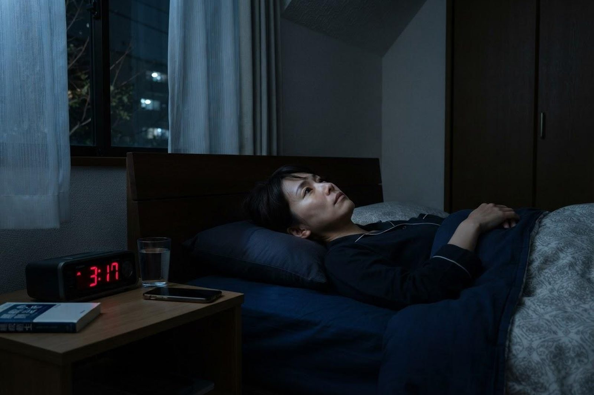

夜なかなか寝つけず、途中で目が覚めてしまいます。相談していいのでしょうか？
A. 回答もちろんご相談いただいて構いません。「眠れない」というお悩みは、内科でも対応できるご相談のひとつです。眠りの問題は睡眠時無呼吸や甲状腺の異常、気分の落ち込みなど、身体や心の状態が背景にある場合もあるとされています。まずは生活習慣の確認と、身体面のチェックから始めていくことができます。眠れない日が続いて日中の生活に支障が出ているようであれば、早めにご相談ください。

眠れないときに考えられる主な原因
不眠の背景には、生活のリズムから身体の病気まで、さまざまな要因があるとされています。
- 生活リズムの乱れ：起床時刻がばらばらだったり、朝に光を浴びる機会が少なかったりすると、体内時計が乱れて寝つきに影響することがあります。
- ストレス・心配ごと：仕事や家庭の悩みで緊張が続くと、寝床に入っても頭が休まりにくくなる場合があります。
- 嗜好品の影響：カフェイン、たばこのニコチン、アルコールは眠りを妨げる要因になり得るとされています。
- 身体の病気：睡眠時無呼吸、甲状腺の異常、痛みやかゆみ、頻尿、心臓や呼吸器の病気などが眠りを妨げていることがあります。
- こころの不調・脚の不快感：うつ状態や不安、脚がむずむずして眠れない「むずむず脚症候群（レストレスレッグス症候群）」が隠れている場合もあります。
まず見直したい睡眠習慣チェックリスト
厚生労働省の情報でも、生活習慣の見直しは眠りを整える基本とされています。当てはまらない項目がいくつあるか、確かめてみてください。
できているか確認してみましょう
- 起床時刻を毎日ほぼ一定にしている（休日の寝坊は1〜2時間まで）
- 朝起きたらカーテンを開け、日の光を浴びている
- 日中に散歩などの軽い運動を取り入れている
- 昼寝をする場合は午後早い時間に20〜30分程度にとどめている
- 夕方以降のコーヒー・緑茶・エナジードリンクを控えている
- 寝る前の飲酒（寝酒）を習慣にしていない
- 就寝前にスマートフォンやテレビの明るい画面を長時間見ていない
- 寝室は暗く静かで、暑すぎず寒すぎない温度になっている
- 眠れないまま寝床で長く過ごさず、いったん寝床を離れている
とくに注意したいのが寝酒です。アルコールは寝つきを早めるように感じられますが、深い眠りを減らし、途中で目が覚めやすくなるなど睡眠の質を下げるとされています。量が増えていきやすい点も指摘されており、眠るための飲酒はおすすめできません。
受診の目安
眠れない夜が一時的にあること自体は珍しくありませんが、次のような場合は医療機関にご相談ください。
すぐに受診を検討してください
- 気分の落ち込みが強く、何をしても楽しめない状態が続いている
- 強い胸の苦しさや息苦しさで夜中に目が覚める
- 家族から睡眠中に呼吸が止まっていると指摘され、日中に強い眠気がある
- 生きているのがつらいと感じる気持ちがある
早めの受診をおすすめします
- 寝つけない、途中で目が覚める状態が週に3日以上、1か月ほど続いている
- 日中の眠気・だるさ・集中力の低下で仕事や家事に支障が出ている
- いびきがひどい、朝起きたときに頭が重い
- 動悸・汗をかきやすい・体重の変化など、身体の変化を伴っている
- 脚のむずむず感やほてりで寝つけない
- 市販の睡眠改善薬を続けて使っているが改善しない
当院での対応・検査
当院は内科・呼吸器内科・循環器内科などを標榜しており、不眠の背景に身体の要因がないかを確認するところから始めます。問診で眠りの状況と生活リズムをうかがったうえで、必要に応じて血液検査（貧血や甲状腺の状態などの確認）、血圧・心電図などを行います。いびきや日中の眠気が目立つ場合には、睡眠時無呼吸を調べる検査についてご案内することもあります。生活習慣の整え方を一緒に確認し、状態によってはお薬を用いた治療や、より専門的な医療機関への紹介をご提案します。眠りの悩みは人によって背景が異なるため、「必ず眠れるようになる」とお約束することはできませんが、原因を一つずつ確かめていくことはできます。
受診の実務案内（予約・検査時間・費用）
- 予約：予約なしで当日受診いただけます。診療時間は月〜土 7:00〜12:00／月〜金 14:30〜18:30（土曜は14:30〜17:30）です。朝7時から診療していますので、出勤前のご相談も可能です。
- 時間の目安：初回の問診と診察はおおむね15〜20分程度、血液検査を行う場合は採血自体は数分です。混雑状況により前後します。
- 費用：不眠の原因を調べる診察・検査は保険診療の対象となります。金額は検査内容により異なりますので、詳しくはお問い合わせください。
- 持ち物：健康保険証（マイナ保険証）、他院で処方されているお薬手帳をお持ちください。市販薬やサプリメントを使っている場合はその情報も役立ちます。
- 駐車場：無料22台。両備バス「西中学校前」より徒歩3分、ニシナ玉島柏島店の西隣りです。
受診時に伝えていただきたいこと
- いつから、どのくらい続いているか
- 寝つきが悪いのか、途中で目が覚めるのか、朝早く目が覚めるのか
- 就寝・起床のおおよその時刻と、日中の眠気の程度
- カフェイン・お酒・たばこの習慣、就寝前の過ごし方
- いびき、脚のむずむず感、動悸、痛みなど、ほかに気になる症状はあるか
- 現在使っているお薬（市販の睡眠改善薬を含む）
1週間ほど、就寝・起床時刻と目が覚めた回数をメモしていただくと、状況がより正確に把握しやすくなります。
参考にした情報
眠れない日が続いてつらいときは、我慢せずご相談ください。朝7時から診療しています。
最終更新：2026年8月26日